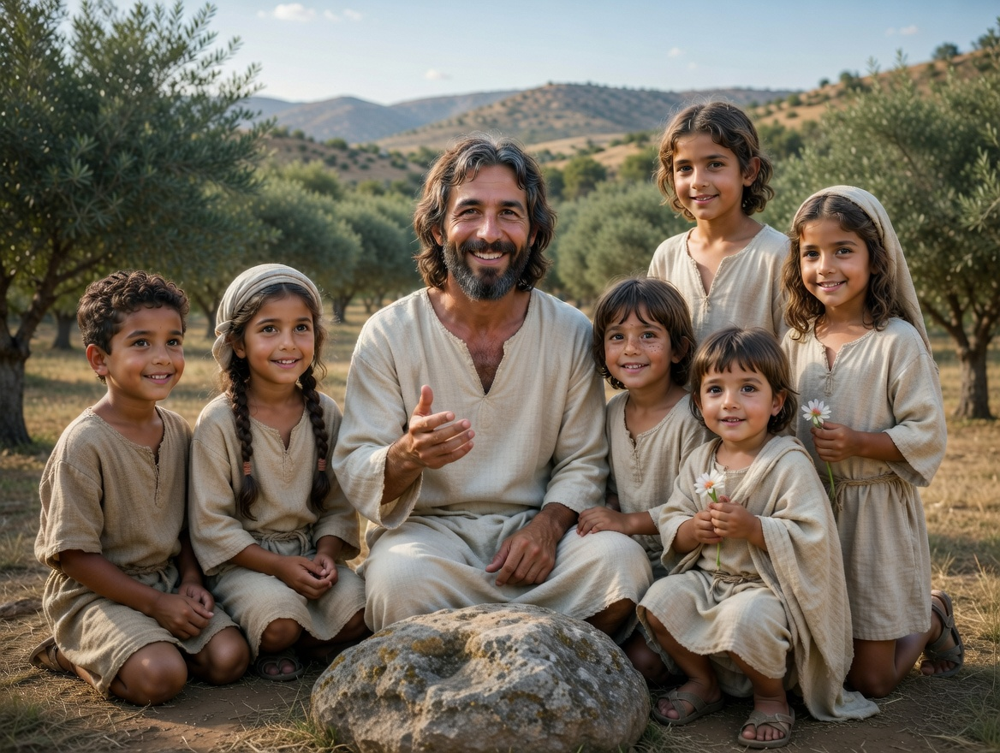

Make room for varied family lives
Continue from Christ’s welcome into belonging, responsibility, and care.
Art & Study

When people brought children to Jesus, He did not treat them as interruptions. He welcomed them, took them in His arms, and blessed them.
Mark 10 records the disciples attempting to turn the children away. Jesus corrected them and taught that the kingdom of God belongs to those who receive it with childlike qualities. His response gives children dignity and makes humility, trust, teachability, and dependence on God part of the pattern of discipleship.
The scene also invites adult disciples to ask whom they are tempted to treat as inconvenient or unimportant. The Savior’s attention consistently reaches people others overlook. Following Him includes creating room for the vulnerable and receiving them with genuine care.
Read Mark 10:13-16. In the King James wording, “suffer” here means allow. People bring children to Jesus; the disciples rebuke those bringing them. Jesus is displeased with that response, welcomes the children, and blesses them. Begin with what He actually does before drawing a lesson about what adults should be like.
The children are not asked to prove that they are important enough for His attention. Adults have created the obstacle. As a personal application, consider whether the way a home, class, or congregation welcomes people gives children room to participate, ask questions, and be heard. A child who needs extra time, a quieter setting, or help communicating still deserves patience and dignity.
The invitation to receive God's kingdom as a little child should never be used to require unsafe obedience or silence. Caring for children includes listening to concerns and taking their safety seriously. That is an application of care, not an additional sentence from the passage.
Now read 3 Nephi 17:11-25. In this Book of Mormon account, the risen Jesus asks that the little children be brought to Him, prays, weeps, and blesses them individually. Notice how the narrative slows down around His attention to them. Mark and 3 Nephi describe different settings; read each on its own terms before identifying the shared theme of Christ's care.
The image is a devotional interpretation of the Savior's welcome. Details chosen by the artist are not evidence of exactly how either scriptural scene looked. What does the composition help you notice? What additional detail do you discover only when you read the passages?
For an optional study conversation, ask: “Who makes room for children in these accounts?” and “What would a child experience as welcome from us?” Choose one specific action that fits the children actually in your life, rather than an idealized picture of family life.
If this image brings grief because a child has died, you do not need to turn that grief into a lesson today. The child-loss page offers a gentler place to consider scripture and support at your own pace.
Continue from Christ’s welcome into belonging, responsibility, and care.
Explore comfort and support if the image has brought grief to the surface.